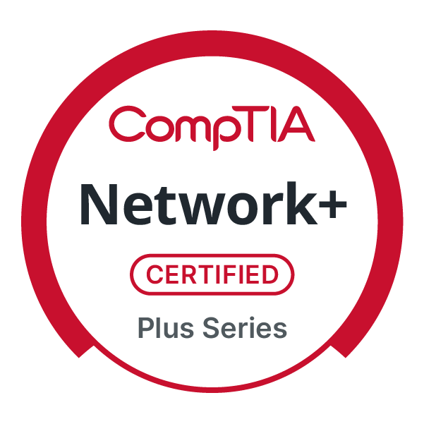

Professional Certifications

CERTIFIED
CompTIA A+
Strong foundation in hardware/software troubleshooting, system maintenance, and technical support excellence.

CERTIFIED
CompTIA Network+
Advanced knowledge of TCP/IP, routing, switching, and network infrastructure design and troubleshooting.

CERTIFIED
CompTIA Security+
Cybersecurity fundamentals including risk management, incident response, and security best practices.
CERTIFIED
CompTIA IT Operations Specialist
Comprehensive infrastructure operations and system administration competency across multiple domains.
📄 View CertificateCERTIFIED
CompTIA Secure Infrastructure Specialist
Advanced network and infrastructure security implementation with focus on protection strategies.
📄 View CertificateIN PROGRESS
Cisco CCNA & AWS Solutions Architect
Pursuing advanced networking expertise and cloud architecture skills to expand technical capabilities and stay current with industry trends.